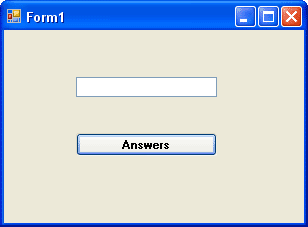
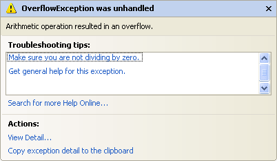

More about Variables in VB NET
We've met two variable types so far - As String and As Integer. But there are quite a few more you can use. Let's start by examining number variables.
Start a new project for this. If you have the old one displayed, you can click File > Close Solution from the menu bar. You will then be returned to the Start Page. Click the New Project button at the bottom. In the dialogue box, give your project a name.
Put a textbox and a Button on your new form. Change the Properties of the Textbox to the following
Name: txtNumbers
Font: MS Sans Serif, Bold, 10
Text: just delete the default Textbox1, and leave the textbox blank
Change the Properties of the Button to the following:
Text: Answers
Font: MS Sans Serif, Bold, 10
Click on the Form itself, and change it's Text property to "Testing Types". Your Form should look something like this:

Double click on the Button to bring up the code window. Type the following code for your Button (The Button1_Click part is spread over three lines only for ease-of-reading on this web page. You can keep yours on one line in your code):
Private Sub Button1_Click(ByVal sender AsSystem.Object, _
ByVale As System.EventArgs) _
Handles Button1.Click
Dim testNumber As Short
testNumber = Val( txtNumbers.Text )
MsgBox testNumber
End Sub
Notice that there is a new Type of variable declared - As Short. This means "Short Integer". We'll see what it does. The Val part converts the Text into a number.
Run your programme. While it's running, do the following:
- Enter the number 1 into the textbox, and click the Answers button
- The number 1 should display in the Message Box
- Add the number 2 to the textbox and click the Button
- The number 12 should display in the Message Box
- Add the number 3 to the textbox and click the Button
- The number 123 should display in the Message Box
- Keeping adding numbers one at a time, then clicking the button
How many numbers did you get in the textbox before the following error message was displayed? (Click Break to get rid of it.)

You should have been able to enter 12345 quite safely. When you entered 123456 and clicked the button, that's when the error message displayed.
When you click the Break button, you are returned to the coding environment. You'll see the problem line highlighted in yellow:
But your programme will still be running. So click Debug > Stop Debugging to return to the normal code window.
An Overflow happens when you try to put too much information into a variable that can't handle it.
No more reading these lessons online - get the eBook here!
The reason we got an error message after just 6 numbers was because of the variable type. We had this:
Dim testNumber As Short
And it's As Short that is causing us the problems. If you use As Short you're only allowed numbers up to a certain value. The range for a Short variable is -32 768 to 32 767. When we entered 6 numbers, Visual Basic decided it didn't want to know. If you run your programme again, and then enter 32768, you'll get the same Overflow error message. If you change it once more to -32769, you'll get the error message as well. So it's not just 6 numbers a Short Type can't handle - it's 5 numbers above or below the values specified.
So what's the solution? Change the variable Type, of course!
Change the variable to this
Dim testNumber As Integer
Now start the programme and try again, adding numbers one at a time to the textbox, and then clicking the Command button. How far did you get this time?
If you started at 1 and added the numbers in sequence, you should have been allowed to enter 1234567890. One more number and Visual Basic gave you the Overflow error message, right? That's because variable types with As Integer also have a limitation. The range you can use with the As Integer variable type is -2,147,483,648 to 2,147,483,647. If you want a really, really big number you can use As Long.
Dim testNumber As Long
But these will get you whole numbers. Leave your number on As Integer. Run your programme again and enter a value of 123.45 into your textbox. Press the button and see what happens.
VB will chop off the point 45 bit at the end. If you want to work with floating point numbers (the .45 bit), there are three Types you can use:
Dim testNumber As Single
Dim testNumber As Double
Dim testNumber As Decimal
Single and Double mean Single-Precision and Double-Precision numbers. If you want to do scientific calculations, and you need to be really precise, then use Double rather than Single: it's more accurate.
The As Decimal Type is useful when you want a precise number of decimal places. It's not as accurate as the Double Type, though.
In terms of the space used in the computer's memory, Short Types use 2 Bytes, Integer Types use 4 Bytes, Long Types use 8 Bytes, Single Types use 4 Bytes, Double Types use 8 Bytes, and Decimal Types use 16 Bytes.
Exercise
Write a programme to calculate the following sum.
0.123345678 * 1234
Use the Single Type first, then change it to As Double. Use a Message box to display the answer. Was the number rounded up or rounded down for the Single Type?
In the next part, we'll get some more practise with variables.